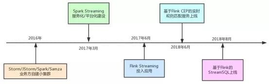
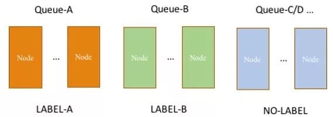
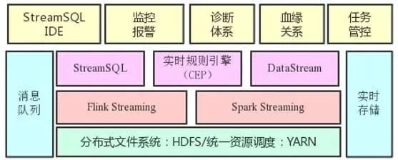
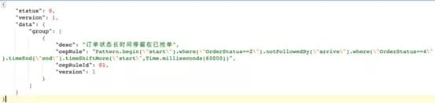
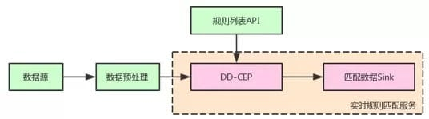
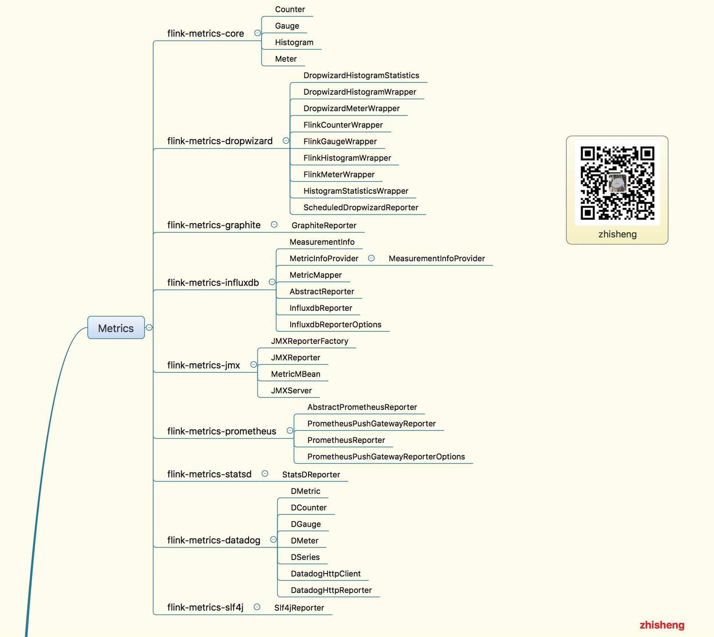
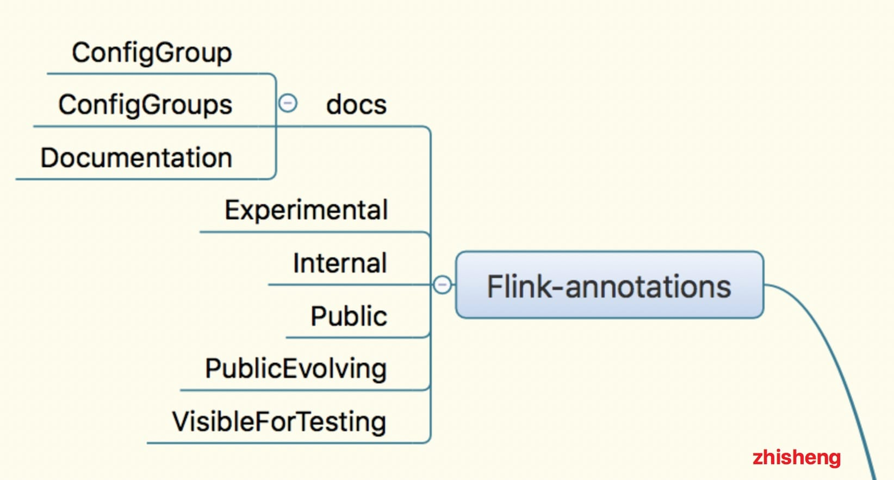

<html><head><meta charset='utf-8'><meta name='viewport' content='width=device-width, initial-scale=1'>
<meta name='applicable-device' content='pc'><meta name='keywords' content='电脑,电脑讲解,电脑技术,编程,电脑故障维修滴滴实时计算发展之路及平台架构实践' />
<script src='../../highlight/highlight.pack.js'></script>
<link rel='stylesheet' type='text/css' href='../../highlight/styles/monokai.css'/>

<link rel='stylesheet' href='../../fenxiang/dist/css/share.min.css'>
<script src='../../fenxiang/src/js/social-share.js'></script>
<script src='../../fenxiang/src/js/qrcode.js'></script>

</head><body><script>hljs.initHighlightingOnLoad();</script><script>
var system ={};  
var p = navigator.platform;       
system.win = p.indexOf('Win') == 0;  
system.mac = p.indexOf('Mac') == 0;  
system.x11 = (p == 'X11') || (p.indexOf('Linux') == 0);     
if(system.win||system.mac||system.xll){
document.write("<link href='../css/3.css' rel='stylesheet' type='text/css'>");}else{ document.write("<link href='../css/3wap.css' rel='stylesheet' type='text/css'>");}</script><script src='../../js/3.js'></script><div class='div2'><div class='heading_nav'><ul><div><li><a href='../../index.html'>首页</a></li>
</div><div onclick='hidden1()' >分享</div>
</ul></div></div>
<div id='heading_nav2'> 
<li class='row' >
<div class='social-share' data-mode='prepend'><a href='javascript:' class='social-share-icon icon-heart'></a></div></li></div><script charset='utf-8' src='../../3/js/hengfu.js'></script><script charset='utf-8' src='../../3/js/hengfu2.js'></script><hr><div class='div1'><div class='biaoti'><center>滴滴实时计算发展之路及平台架构实践</center></div><div class='banquan'>原文出处:本文由博客园博主zhisheng_tian提供。<br/>
原文连接:https://www.cnblogs.com/zhisheng/p/11795085.html</div><br>
    <hr />
<p>toc: true<br />
title: 滴滴实时计算发展之路及平台架构实践<br />
date: 2019-08-25<br />
tags:</p>
<ul>
<li>Flink</li>
<li><h2 id="大数据">大数据</h2></li>
</ul>
<p>滴滴的核心业务是一个实时在线服务，因此具有丰富的实时数据和实时计算场景。本文将介绍滴滴实时计算发展之路以及平台架构实践。</p>
<!--more-->
<h3 id="实时计算演进">实时计算演进</h3>
<p>随着滴滴业务的发展，滴滴的实时计算架构也在快速演变。到目前为止大概经历了三个阶段：</p>
<ul>
<li><p>业务方自建小集群阶段；</p></li>
<li><p>集中式大集群、平台化阶段；</p></li>
<li><p>SQL化阶段。</p></li>
</ul>
<p>下图标识了其中重要的里程碑，稍后会给出详细阐述：</p>
<p></p>
<p>在2017年以前，滴滴并没有统一的实时计算平台，而是各个业务方自建小集群。其中用到的引擎有Storm、JStorm、Spark Streaming、Samza等。业务方自建小集群模式存在如下弊端：</p>
<ul>
<li><p>需要预先采购大量机器，由于单个业务独占，资源利用率通常比较低；</p></li>
<li><p>缺乏有效的监控报警体系；</p></li>
<li><p>维护难度大，需要牵涉业务方大量精力来保障集群的稳定性；</p></li>
<li><p>缺乏有效技术支持，且各自沉淀的东西难以共享。</p></li>
</ul>
<p>为了有效解决以上问题，滴滴从2017年年初开始构建统一的实时计算集群及平台。</p>
<p>技术选型上，我们基于滴滴现状选择了内部用大规模数据清洗的Spark Streaming引擎，同时引入On-YARN模式，并利用YARN的多租户体系构建了认证、鉴权、资源隔离、计费等机制。</p>
<p>相对于离线计算，实时计算任务对于稳定性有着更高的要求，为此我们构建了两层资源隔离体系：</p>
<ul>
<li><p>第一层是基于CGroup做进程（Container）级别的CPU及内存隔离；</p></li>
<li><p>第二层是物理机器级别的隔离。</p></li>
</ul>
<p>我们通过改造YARN的FairScheduler使其支持Node Label。达到的效果如下图所示：</p>
<p></p>
<p>普通业务的任务混跑在同一个Label机器上，而特殊业务的任务跑在专用Label的机器上。</p>
<p>通过集中式大集群和平台化建设，基本消除了业务方自建小集群带来的弊端，实时计算也进入了第二阶段。</p>
<p>伴随着业务的发展，我们发现Spark Streaming的Micro Batch模式在一些低延时的报警业务及在线业务上显得捉襟见肘。于是我们引入了基于Native Streaming模式的Flink作为新一代实时计算引擎。</p>
<p>Flink不仅延时可以做到毫秒级，而且提供了基于Process Time/Event Time丰富的窗口函数。基于Flink我们联合业务方构架了滴滴流量最大的业务网关监控系统，并快速支持了诸如乘客位置变化通知、轨迹异常检测等多个线上业务。</p>
<h3 id="实时计算平台架构">实时计算平台架构</h3>
<p>为了最大程度方便业务方开发和管理流计算任务，我们构建了如图所示的实时计算平台：</p>
<p></p>
<p>在流计算引擎基础上提供了StreamSQL IDE、监控报警、诊断体系、血缘关系、任务管控等能力。各自的作用如下：</p>
<ul>
<li><p>StreamSQL IDE。下文会介绍，是一个Web化的SQL IDE；</p></li>
<li><p>监控报警。提供任务级的存活、延时、流量等监控以及基于监控的报警能力；</p></li>
<li><p>诊断体系。包括流量曲线、Checkpoint、GC、资源使用等曲线视图，以及实时日志检索能力。</p></li>
<li><p>血缘关系。我们在流计算引擎中内置了血缘上报能力，进而在平台上呈现流任务与上下游的血缘关系；</p></li>
<li><p>任务管控。实现了多租户体系下任务提交、启停、资产管理等能力。通过Web化任务提交消除了传统客户机模式，使得平台入口完全可控，内置参数及版本优化得以快速上线。</p></li>
</ul>
<h3 id="实时规则匹配服务建设">实时规则匹配服务建设</h3>
<p>在滴滴内部有大量的实时运营场景，比如“某城市乘客冒泡后10秒没有下单”。针对这类检测事件之间依赖关系的场景，用Fink的CEP是非常合适的。</p>
<p>但是社区版本的CEP不支持描述语言，每个规则需要开发一个应用，同时不支持动态更新规则。为了解决这些问题，滴滴做了大量功能扩展及优化工作。功能扩展方面主要改动有：</p>
<ul>
<li><p>支持wait算子。对于刚才例子中的运营规则，社区版本是表达不了的。滴滴通过增加wait算子，实现了这类需求；</p></li>
<li><p>支持DSL语言。基于Groovy和Aviator解析引擎，我们实现了如下图所示的DSL描述规则能力：</p></li>
</ul>
<p></p>
<ul>
<li>单任务多规则及规则动态更新。由于实时运营规则由一线运营同学来配置，所以规则数量，规则内容及规则生命周期会经常发生变化。这种情况每个规则一个应用是不太现实的。为此我们开发了多规则模式且支持了动态更新。</li>
</ul>
<p>除了功能拓展之外，为了应对大规模运营规则的挑战，滴滴在CEP性能上也做了大量优化，主要有：</p>
<ul>
<li><p>SharedBuffer重构。基于Flink MapState重构SharedBuffer，减少每次数据处理过程中的状态交互。同时剥离规则和用户数据极大降低每次匹配的时候从状态中反序列化的数据量；</p></li>
<li><p>增加访问缓存（已贡献社区）。缓存SharedBuffer数据中每次处理所需要更新的引用计数，延缓更新；</p></li>
<li><p>简化event time语义处理。避免key在很分散情况下每次watermark更新时要遍历所有key的数据；</p></li>
<li><p>复用conditionContext（已贡献社区）。减少条件查询时对partialMatch元素的反复查询。</p></li>
</ul>
<p>以上优化将CEP性能提升了多个数量级。配合功能扩展，我们在滴滴内部提供了如图所示的服务模式：</p>
<p></p>
<p>业务方只需要清洗数据并提供规则列表API即可具备负责规则的实时匹配能力。</p>
<p>目前滴滴CEP已经在快车个性化运营、实时异常工单检测等业务上落地，取得了良好的效果。</p>
<h3 id="streamsql建设">StreamSQL建设</h3>
<p>正如离线计算中Hive之于MapReduce一样，流式SQL也是必然的发展趋势。通过SQL化可以大幅度降低业务方开发流计算的难度，业务方不再需要学习Java/Scala，也不需要理解引擎执行细节及各类参数调优。</p>
<p>为此我们在2018年启动了StreamSQL建设项目，在社区Flink SQL基础上拓展了以下能力：</p>
<p>扩展DDL语法。如下图所示，打通了滴滴内部主流的消息队列以及实时存储系统(StreamSQL内置打通消息队列及实施存储)：</p>
<ul>
<li><p>通过内置常见消息格式（如json、binlog、标准日志）的解析能力，使得用户可以轻松写出DDL语法，并避免重复写格式解析语句。</p></li>
<li><p>拓展UDF。针对滴滴内部常见处理逻辑，内置了大量UDF，包括字符串处理、日期处理、Map对象处理、空间位置处理等。</p></li>
<li><p>支持分流语法。单个输入源多个输出流在滴滴内部非常常见，为此我们改造了Calcite使其支持分流语义。</p></li>
<li><p>支持基于TTL的join语义。传统的Window Join因为存在window边界数据突变情况，不能满足滴滴内部的需求。为此我们引入了TTL State，并基于此开发了基于TTL Join的双流join以及维表join。</p></li>
<li><p>StreamSQL IDE。前文提到平台化之后我们没有提供客户机，而是通过Web提交和管控任务。因此我们也相应开发了StreamSQL IDE，实现Web上开发StreamSQL，同时提供了语法检测、DEBUG、诊断等能力。</p></li>
</ul>
<p>目前StreamSQL在滴滴已经成功落地，流计算开发成本得到大幅度降低。预期未来将承担80%的流计算业务量。</p>
<h3 id="总结">总结</h3>
<p>作为一家出行领域的互联网公司，滴滴对实时计算有天然的需求。</p>
<p>过去的一年多时间里，我们从零构建了集中式实时计算平台，改变了业务方自建小集群的局面。为满足低延时业务的需求，成功落地了Flink Streaming，并基于Flink构建了实时规则匹配（CEP）服务以及StreamSQL，使得流计算开发能力大幅度降低。未来将进一步拓展StreamSQL，并在批流统一、IoT、实时机器学习等领域探索和建设。</p>
<h3 id="关注我">关注我</h3>
<p>微信公众号：<strong>zhisheng</strong></p>
<p>另外我自己整理了些 Flink 的学习资料，目前已经全部放到微信公众号（zhisheng）了，你可以回复关键字：<strong>Flink</strong> 即可无条件获取到。另外也可以加我微信 你可以加我的微信：<strong>yuanblog_tzs</strong>，探讨技术！</p>
<p></p>
<p>更多私密资料请加入知识星球！</p>
<p></p>
<h3 id="github-代码仓库">Github 代码仓库</h3>
<p><a href="https://github.com/zhisheng17/flink-learning/" class="uri">https://github.com/zhisheng17/flink-learning/</a></p>
<p>以后这个项目的所有代码都将放在这个仓库里，包含了自己学习 flink 的一些 demo 和博客</p>
<h3 id="博客">博客</h3>
<p>1、<a href="http://www.54tianzhisheng.cn/2018/10/13/flink-introduction/">Flink 从0到1学习 —— Apache Flink 介绍</a></p>
<p>2、<a href="http://www.54tianzhisheng.cn/2018/09/18/flink-install">Flink 从0到1学习 —— Mac 上搭建 Flink 1.6.0 环境并构建运行简单程序入门</a></p>
<p>3、<a href="http://www.54tianzhisheng.cn/2018/10/27/flink-config/">Flink 从0到1学习 —— Flink 配置文件详解</a></p>
<p>4、<a href="http://www.54tianzhisheng.cn/2018/10/28/flink-sources/">Flink 从0到1学习 —— Data Source 介绍</a></p>
<p>5、<a href="http://www.54tianzhisheng.cn/2018/10/30/flink-create-source/">Flink 从0到1学习 —— 如何自定义 Data Source ？</a></p>
<p>6、<a href="http://www.54tianzhisheng.cn/2018/10/29/flink-sink/">Flink 从0到1学习 —— Data Sink 介绍</a></p>
<p>7、<a href="http://www.54tianzhisheng.cn/2018/10/31/flink-create-sink/">Flink 从0到1学习 —— 如何自定义 Data Sink ？</a></p>
<p>8、<a href="http://www.54tianzhisheng.cn/2018/11/04/Flink-Data-transformation/">Flink 从0到1学习 —— Flink Data transformation(转换)</a></p>
<p>9、<a href="http://www.54tianzhisheng.cn/2018/12/08/Flink-Stream-Windows/">Flink 从0到1学习 —— 介绍 Flink 中的 Stream Windows</a></p>
<p>10、<a href="http://www.54tianzhisheng.cn/2018/12/11/Flink-time/">Flink 从0到1学习 —— Flink 中的几种 Time 详解</a></p>
<p>11、<a href="http://www.54tianzhisheng.cn/2018/12/30/Flink-ElasticSearch-Sink/">Flink 从0到1学习 —— Flink 读取 Kafka 数据写入到 ElasticSearch</a></p>
<p>12、<a href="http://www.54tianzhisheng.cn/2019/01/05/Flink-run/">Flink 从0到1学习 —— Flink 项目如何运行？</a></p>
<p>13、<a href="http://www.54tianzhisheng.cn/2019/01/06/Flink-Kafka-sink/">Flink 从0到1学习 —— Flink 读取 Kafka 数据写入到 Kafka</a></p>
<p>14、<a href="http://www.54tianzhisheng.cn/2019/01/13/Flink-JobManager-High-availability/">Flink 从0到1学习 —— Flink JobManager 高可用性配置</a></p>
<p>15、<a href="http://www.54tianzhisheng.cn/2019/01/14/Flink-parallelism-slot/">Flink 从0到1学习 —— Flink parallelism 和 Slot 介绍</a></p>
<p>16、<a href="http://www.54tianzhisheng.cn/2019/01/15/Flink-MySQL-sink/">Flink 从0到1学习 —— Flink 读取 Kafka 数据批量写入到 MySQL</a></p>
<p>17、<a href="http://www.54tianzhisheng.cn/2019/01/20/Flink-RabbitMQ-sink/">Flink 从0到1学习 —— Flink 读取 Kafka 数据写入到 RabbitMQ</a></p>
<p>18、<a href="https://t.zsxq.com/zV7MnuJ">Flink 从0到1学习 —— Flink 读取 Kafka 数据写入到 HBase</a></p>
<p>19、<a href="https://t.zsxq.com/zV7MnuJ">Flink 从0到1学习 —— Flink 读取 Kafka 数据写入到 HDFS</a></p>
<p>20、<a href="https://t.zsxq.com/zV7MnuJ">Flink 从0到1学习 —— Flink 读取 Kafka 数据写入到 Redis</a></p>
<p>21、<a href="https://t.zsxq.com/uVbi2nq">Flink 从0到1学习 —— Flink 读取 Kafka 数据写入到 Cassandra</a></p>
<p>22、<a href="https://t.zsxq.com/zV7MnuJ">Flink 从0到1学习 —— Flink 读取 Kafka 数据写入到 Flume</a></p>
<p>23、<a href="https://t.zsxq.com/zV7MnuJ">Flink 从0到1学习 —— Flink 读取 Kafka 数据写入到 InfluxDB</a></p>
<p>24、<a href="https://t.zsxq.com/zV7MnuJ">Flink 从0到1学习 —— Flink 读取 Kafka 数据写入到 RocketMQ</a></p>
<p>25、<a href="http://www.54tianzhisheng.cn/2019/03/13/flink-job-jars/">Flink 从0到1学习 —— 你上传的 jar 包藏到哪里去了</a></p>
<p>26、<a href="https://t.zsxq.com/zV7MnuJ">Flink 从0到1学习 —— 你的 Flink job 日志跑到哪里去了</a></p>
<p>27、<a href="http://www.54tianzhisheng.cn/2019/02/28/blink/">阿里巴巴开源的 Blink 实时计算框架真香</a></p>
<p>28、<a href="http://www.54tianzhisheng.cn/2019/03/28/flink-additional-data/">Flink 从0到1学习 —— Flink 中如何管理配置？</a></p>
<p>29、<a href="http://www.54tianzhisheng.cn/2019/06/12/flink-split/">Flink 从0到1学习—— Flink 不可以连续 Split(分流)？</a></p>
<p>30、<a href="http://www.54tianzhisheng.cn/2019/06/13/flink-book-paper/">Flink 从0到1学习—— 分享四本 Flink 国外的书和二十多篇 Paper 论文</a></p>
<p>31、<a href="http://www.54tianzhisheng.cn/2019/06/14/flink-architecture-deploy-test/">Flink 架构、原理与部署测试</a></p>
<p>32、<a href="http://www.54tianzhisheng.cn/2019/06/15/Stream-processing/">为什么说流处理即未来？</a></p>
<p>33、<a href="http://www.54tianzhisheng.cn/2019/06/16/flink-sql-oppo/">OPPO 数据中台之基石：基于 Flink SQL 构建实时数据仓库</a></p>
<p>34、<a href="http://www.54tianzhisheng.cn/2019/06/17/flink-vs-storm/">流计算框架 Flink 与 Storm 的性能对比</a></p>
<p>35、<a href="http://www.54tianzhisheng.cn/2019/06/18/flink-state/">Flink状态管理和容错机制介绍</a></p>
<p>36、<a href="http://www.54tianzhisheng.cn/2019/06/20/flink-kafka-Exactly-Once/">Apache Flink 结合 Kafka 构建端到端的 Exactly-Once 处理</a></p>
<p>37、<a href="http://www.54tianzhisheng.cn/2019/06/21/flink-in-360/">360深度实践：Flink与Storm协议级对比</a></p>
<p>38、<a href="http://www.54tianzhisheng.cn/2019/06/26/flink-TensorFlow/">如何基于Flink+TensorFlow打造实时智能异常检测平台？只看这一篇就够了</a></p>
<p>39、<a href="http://www.54tianzhisheng.cn/2019/07/01/flink-1.9-preview/">Apache Flink 1.9 重大特性提前解读</a></p>
<p>40、<a href="http://www.54tianzhisheng.cn/2019/12/31/Flink-resources/">Flink 全网最全资源（视频、博客、PPT、入门、原理、实战、性能调优、源码解析、问答等持续更新）</a></p>
<p>41、<a href="https://mp.weixin.qq.com/s/ok-YwuVbwAVtJz7hUCiZxg">Flink 灵魂两百问，这谁顶得住？</a></p>
<p>42、<a href="http://www.54tianzhisheng.cn/2019/08/18/flink-side-output/">Flink 从0到1学习 —— 如何使用 Side Output 来分流？</a></p>
<p>43、<a href="http://www.54tianzhisheng.cn/2019/08/06/flink-streaming-system/">你公司到底需不需要引入实时计算引擎？</a></p>
<p>44、<a href="http://www.54tianzhisheng.cn/2019/08/19/flink/">一文让你彻底了解大数据实时计算引擎 Flink</a></p>
<h3 id="源码解析">源码解析</h3>
<p>1、<a href="http://www.54tianzhisheng.cn/2019/01/30/Flink-code-compile/">Flink 源码解析 —— 源码编译运行</a></p>
<p>2、<a href="http://www.54tianzhisheng.cn/2019/03/14/Flink-code-structure/">Flink 源码解析 —— 项目结构一览</a></p>
<p>3、<a href="http://www.54tianzhisheng.cn/tags/Flink/">Flink 源码解析—— local 模式启动流程</a></p>
<p>4、<a href="http://www.54tianzhisheng.cn/2019/03/15/Flink-code-Standalone-start/">Flink 源码解析 —— standalone session 模式启动流程</a></p>
<p>5、<a href="http://www.54tianzhisheng.cn/2019/03/16/Flink-code-Standalone-JobManager-start/">Flink 源码解析 —— Standalone Session Cluster 启动流程深度分析之 Job Manager 启动</a></p>
<p>6、<a href="http://www.54tianzhisheng.cn/2019/03/17/Flink-code-Standalone-TaskManager-start/">Flink 源码解析 —— Standalone Session Cluster 启动流程深度分析之 Task Manager 启动</a></p>
<p>7、<a href="http://www.54tianzhisheng.cn/2019/03/18/Flink-code-batch-wordcount-start/">Flink 源码解析 —— 分析 Batch WordCount 程序的执行过程</a></p>
<p>8、<a href="http://www.54tianzhisheng.cn/2019/03/19/Flink-code-streaming-wordcount-start/">Flink 源码解析 —— 分析 Streaming WordCount 程序的执行过程</a></p>
<p>9、<a href="http://www.54tianzhisheng.cn/2019/03/21/Flink-code-JobGraph/">Flink 源码解析 —— 如何获取 JobGraph？</a></p>
<p>10、<a href="http://www.54tianzhisheng.cn/2019/03/20/Flink-code-StreamGraph/">Flink 源码解析 —— 如何获取 StreamGraph？</a></p>
<p>11、<a href="http://www.54tianzhisheng.cn/2019/03/25/Flink-code-jobmanager/">Flink 源码解析 —— Flink JobManager 有什么作用？</a></p>
<p>12、<a href="http://www.54tianzhisheng.cn/2019/03/25/Flink-code-taskmanager/">Flink 源码解析 —— Flink TaskManager 有什么作用？</a></p>
<p>13、<a href="http://www.54tianzhisheng.cn/2019/03/27/Flink-code-JobManager-submitJob/">Flink 源码解析 —— JobManager 处理 SubmitJob 的过程</a></p>
<p>14、<a href="http://www.54tianzhisheng.cn/2019/03/28/Flink-code-TaskManager-submitJob/">Flink 源码解析 —— TaskManager 处理 SubmitJob 的过程</a></p>
<p>15、<a href="http://www.54tianzhisheng.cn/2019/03/23/Flink-code-checkpoint/">Flink 源码解析 —— 深度解析 Flink Checkpoint 机制</a></p>
<p>16、<a href="http://www.54tianzhisheng.cn/2019/03/22/Flink-code-serialize/">Flink 源码解析 —— 深度解析 Flink 序列化机制</a></p>
<p>17、<a href="http://www.54tianzhisheng.cn/2019/03/24/Flink-code-memory-management/">Flink 源码解析 —— 深度解析 Flink 是如何管理好内存的？</a></p>
<p>18、<a href="http://www.54tianzhisheng.cn/2019/07/02/Flink-code-metrics/">Flink Metrics 源码解析 —— Flink-metrics-core</a></p>
<p>19、<a href="http://www.54tianzhisheng.cn/2019/07/02/Flink-code-metrics/">Flink Metrics 源码解析 —— Flink-metrics-datadog</a></p>
<p>20、<a href="http://www.54tianzhisheng.cn/2019/07/02/Flink-code-metrics/">Flink Metrics 源码解析 —— Flink-metrics-dropwizard</a></p>
<p>21、<a href="http://www.54tianzhisheng.cn/2019/07/02/Flink-code-metrics/">Flink Metrics 源码解析 —— Flink-metrics-graphite</a></p>
<p>22、<a href="http://www.54tianzhisheng.cn/2019/07/02/Flink-code-metrics/">Flink Metrics 源码解析 —— Flink-metrics-influxdb</a></p>
<p>23、<a href="http://www.54tianzhisheng.cn/2019/07/02/Flink-code-metrics/">Flink Metrics 源码解析 —— Flink-metrics-jmx</a></p>
<p>24、<a href="http://www.54tianzhisheng.cn/2019/07/02/Flink-code-metrics/">Flink Metrics 源码解析 —— Flink-metrics-slf4j</a></p>
<p>25、<a href="http://www.54tianzhisheng.cn/2019/07/02/Flink-code-metrics/">Flink Metrics 源码解析 —— Flink-metrics-statsd</a></p>
<p>26、<a href="http://www.54tianzhisheng.cn/2019/07/02/Flink-code-metrics/">Flink Metrics 源码解析 —— Flink-metrics-prometheus</a></p>
<p></p>
<p>26、<a href="http://www.54tianzhisheng.cn/2019/07/03/Flink-code-Annotations/">Flink Annotations 源码解析</a></p>
<p></p>
<p>27、<a href="http://www.54tianzhisheng.cn/2019/03/26/Flink-code-ExecutionGraph/">Flink 源码解析 —— 如何获取 ExecutionGraph ？</a></p>
<p>28、<a href="https://t.zsxq.com/UvrRNJM">大数据重磅炸弹——实时计算框架 Flink</a></p>
<p>29、<a href="https://t.zsxq.com/QVFqjea">Flink Checkpoint-轻量级分布式快照</a></p>
<p>30、<a href="http://www.54tianzhisheng.cn/2019/07/04/Flink-code-clients/">Flink Clients 源码解析</a><br />
原文出处：<a href="http://www.54tianzhisheng.cn/">zhisheng的博客</a>，欢迎关注我的公众号：zhisheng</p>


</div><hr><script charset='utf-8' src='../../js/sming.js'></script></body></html>